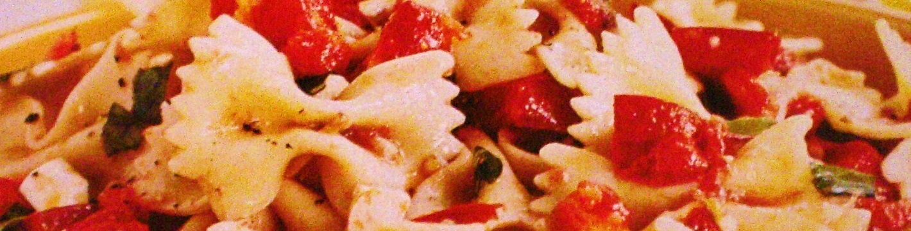

Menu Souper
Antipasti
- Calmars frits
- Roquette et copeaux de Parmigiano
- Mozzarella de bufflonne
- Tartare de poisson frais
- Assortiment de charcuteries et de fromage
- Soupe du jour
Piatti Principali
- Gnocchis
- Tagliatelle
- Linguine aux fruits de mer
- Risotto aux champignons
- Côte de veau grillée
- Filet mignon de boeuf
- Carré d'agneau grillé
- Assortiment de poissons grillés et légumes
Dolce
- Tiramisu
- Soufflé au chocolat
- Panna cotta aux pommes caramélisées